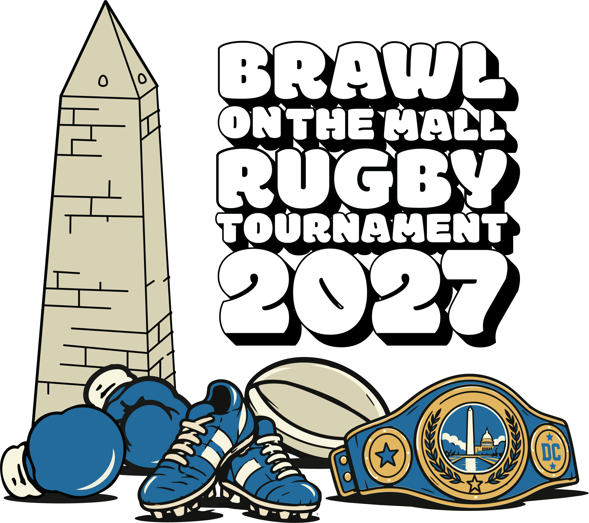
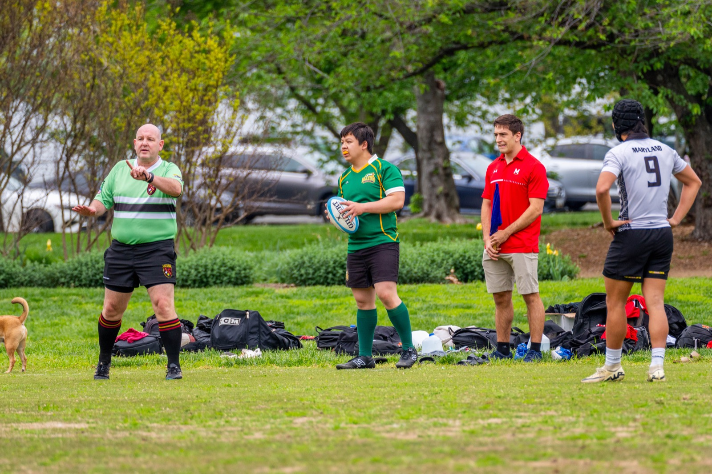

BIG HITS.
CAPITAL
ENERGY.
Welcome to Tournament HQ. Get to the field, follow your team, and catch every result.
Find your next match ↗Hosted by GW Rugby · A DC rugby tradition since the ’90s

Follow the action.
Fixtures & results
Sample times shown in Washington, DC time. Live score reporting is not connected.
Standings
| POS | TEAM | PLAYED | W | D | L | + / − | PTS |
|---|
Standings: 4 points for a win, 2 for a draw, 0 for a loss. Add 1 bonus point for losing by 7 points or fewer and 1 bonus point for scoring at least 3 tries, whether winning or losing. Sample standings use sample try counts.
One full day on the Capital’s pitch.
Find Wallenberg Rugby Field, plan your arrival, and get around the tournament site.
The Google map shows the field location. The site layout and nearby facilities information are archived references; event-day parking arrangements, bathroom hours and accessible routes still need confirmation.
Parking
The archived area map marks the Tidal Basin Parking Lot southwest of the field.
Public bathrooms
The archived map marks a bathroom pavilion northwest of the field, toward the Washington Monument.
Arriving by Metro
Smithsonian Metro Station is marked east of the field on the area map.
Around the field
The archived layout places spectators along Raoul Wallenberg Place, team areas at each end, and the organizer, referee and trainer tents on the opposite side. The final event layout will be confirmed before the tournament.

One weekend.
The entire rugby community.
Three years running.
One valued supporter.
Thank you to KNEXUS, our sponsor for the 2025 and 2026 Brawl on the Mall tournaments. Your support helped make both tournaments a success and brought our rugby community together on the Mall.
Revisit the tournaments ↗